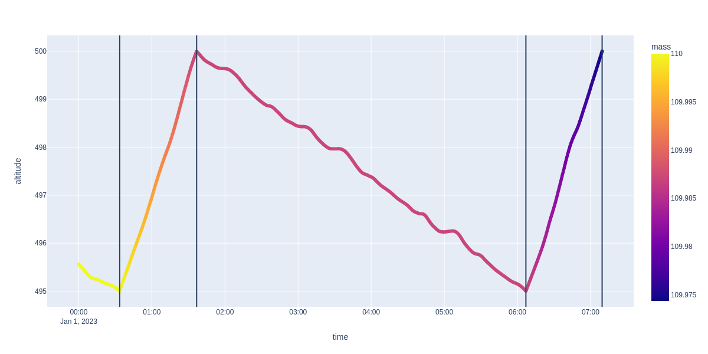
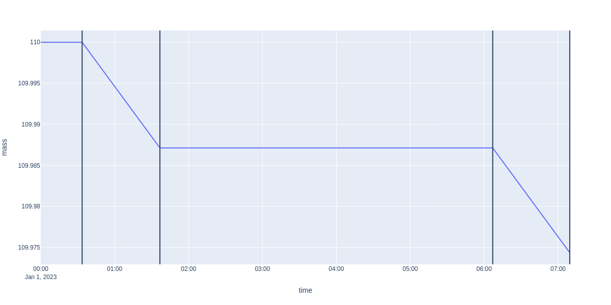

Station-keeping Sequence¶
import plotly.express as px
import pandas as pd
import numpy as np
from ostk.core.filesystem import Directory
from ostk.mathematics.geometry.d3.object import Cuboid
from ostk.mathematics.geometry.d3.object import Composite
from ostk.mathematics.geometry.d3.object import Point
from ostk.physics import Environment
from ostk.physics.coordinate import Frame
from ostk.physics.environment.atmospheric import Earth as EarthAtmosphericModel
from ostk.physics.environment.gravitational import Earth as EarthGravitationalModel
from ostk.physics.environment.magnetic import Earth as EarthMagneticModel
from ostk.physics.environment.object.celestial import Earth
from ostk.physics.time import DateTime
from ostk.physics.time import Duration
from ostk.physics.time import Instant
from ostk.physics.time import Scale
from ostk.physics.time import Time
from ostk.physics.time import Interval
from ostk.physics.unit import Length
from ostk.physics.unit import Mass
from ostk.astrodynamics import Dynamics
from ostk.astrodynamics.dynamics import Thruster
from ostk.astrodynamics.trajectory.state import NumericalSolver
from ostk.astrodynamics.event_condition import RealCondition
from ostk.astrodynamics.trajectory.orbit.model.brouwerLyddaneMean import (
BrouwerLyddaneMeanShort,
)
from ostk.astrodynamics.trajectory import StateBuilder
from ostk.astrodynamics.trajectory import Orbit
from ostk.astrodynamics.trajectory import Sequence
from ostk.astrodynamics.trajectory.state import CoordinateSubset
from ostk.astrodynamics.trajectory.state.coordinate_subset import CartesianPosition
from ostk.astrodynamics.trajectory.state.coordinate_subset import CartesianVelocity
from ostk.astrodynamics.trajectory.orbit.model import Tabulated
from ostk.astrodynamics.flight.system import SatelliteSystem
from ostk.astrodynamics.flight.system import PropulsionSystem
from ostk.astrodynamics.guidance_law import ConstantThrust
User inputs¶
Setup environment
earth = Earth.from_models(
EarthGravitationalModel(
EarthGravitationalModel.Type.EGM96, Directory.undefined(), 20, 20
),
EarthMagneticModel(EarthMagneticModel.Type.Undefined),
EarthAtmosphericModel(EarthAtmosphericModel.Type.Exponential),
)
environment = Environment(Instant.J2000(), [earth])
Initial state
instant = Instant.date_time(DateTime(2023, 1, 1), Scale.UTC)
initial_state = Orbit.sun_synchronous(
instant, Length.kilometers(505.0), Time.midnight(), Earth.default()
).get_state_at(instant)
dry_mass = Mass.kilograms(100.0)
wet_mass = Mass.kilograms(110.0)
propulsion_system = PropulsionSystem(
thrust_si_unit=1e-1, specific_impulse_si_unit=3000.0
)
Setup Dynamics, initial state and Satellite System¶
satellite_geometry = Composite(
Cuboid(Point(0.0, 0.0, 0.0), np.eye(3).tolist(), [1.0, 0.0, 0.0])
)
satellite_system = SatelliteSystem(
dry_mass, satellite_geometry, np.eye(3), 500.0, 2.2, propulsion_system
)
state_builder = StateBuilder(
frame=Frame.GCRF(),
coordinate_subsets=[
CartesianPosition.default(),
CartesianVelocity.default(),
CoordinateSubset.mass(),
CoordinateSubset.surface_area(),
CoordinateSubset.drag_coefficient(),
],
)
coordinates = [
*initial_state.get_coordinates().tolist(),
wet_mass.in_kilograms(),
satellite_system.get_cross_sectional_surface_area(),
satellite_system.get_drag_coefficient(),
]
state = state_builder.build(initial_state.get_instant(), coordinates)
dynamics = Dynamics.from_environment(environment)
numerical_solver = NumericalSolver.default_conditional()
Sequence¶
sequence = Sequence(
numerical_solver=numerical_solver,
dynamics=dynamics,
maximum_propagation_duration=Duration.days(30.0),
verbosity=5,
)
evaluator = (
lambda state: BrouwerLyddaneMeanShort.cartesian(
(state.get_position(), state.get_velocity()),
EarthGravitationalModel.EGM2008.gravitational_parameter,
)
.get_semi_major_axis()
.in_meters()
)
# coast till under 495.0
coast_condition = RealCondition(
name="Mean SMA crossing - coast",
criterion=RealCondition.Criterion.StrictlyNegative,
evaluator=evaluator,
target_value=EarthGravitationalModel.EGM2008.equatorial_radius.in_meters()
+ 495.0e3,
)
sequence.add_coast_segment(coast_condition)
# burn till at 500.0
thrust_condition = RealCondition(
name="Mean SMA crossing - thrust",
criterion=RealCondition.Criterion.StrictlyPositive,
evaluator=evaluator,
target_value=EarthGravitationalModel.EGM2008.equatorial_radius.in_meters()
+ 500.0e3,
)
sequence.add_maneuver_segment(
event_condition=thrust_condition,
thruster_dynamics=Thruster(satellite_system, ConstantThrust.intrack()),
)
sol = sequence.solve(state, 2)
states = sol.get_states()
[2024-06-20 18:43:52.629986] [0x00007f2cfe00f740] [debug] Solving Segment:
-- Segment -----------------------------------------------------------------------------------------
Name: Coast
Type: Coast
Event Condition - - - - - - - - - - - - - - - - - - - - - - - - - - - - - - - - - - - - - - - -
Name: Mean SMA crossing - coast
Target: 6.87314e+06
Target Type: Absolute
Criterion: Strictly Negative
Dynamics - - - - - - - - - - - - - - - - - - - - - - - - - - - - - - - - - - - - - - - - - - -
Name: Central Body Gravity [Earth]
Name: Atmospheric Drag [Earth]
Numerical Solver - - - - - - - - - - - - - - - - - - - - - - - - - - - - - - - - - - - - - - -
Integration logging type: NoLog
Integration stepper type: RungeKuttaDopri5
Integration time step: 5.0
Integration relative tolerance: 9.9999999999999998e-13
Integration absolute tolerance: 9.9999999999999998e-13
----------------------------------------------------------------------------------------------------
[2024-06-20 18:43:53.413125] [0x00007f2cfe00f740] [debug]
-- Segment Solution --------------------------------------------------------------------------------
Name: Coast - Mean SMA crossing - coast - 0
Condition satisfied: True
Segment type: Coast
Start instant: 2023-01-01 00:00:00 [UTC]
End instant: 2023-01-01 00:33:37.352.961.924 [UTC]
Propagation duration: 33:37.352.961.924
----------------------------------------------------------------------------------------------------
[2024-06-20 18:43:53.413318] [0x00007f2cfe00f740] [debug] Solving Segment:
-- Segment -----------------------------------------------------------------------------------------
Name: Maneuver
Type: Maneuver
Event Condition - - - - - - - - - - - - - - - - - - - - - - - - - - - - - - - - - - - - - - - -
Name: Mean SMA crossing - thrust
Target: 6.87814e+06
Target Type: Absolute
Criterion: Strictly Positive
Dynamics - - - - - - - - - - - - - - - - - - - - - - - - - - - - - - - - - - - - - - - - - - -
Name: Central Body Gravity [Earth]
Name: Atmospheric Drag [Earth]
Name:
Mass: 100.0 [kg]
Geometry - - - - - - - - - - - - - - - - - - - - - - - - - - - - - - - - - - - - - - - - - - -
Objects - - - - - - - - - - - - - - - - - - - - - - - - - - - - - - - - - - - - - - - - - - - -
-- Cuboid ------------------------------------------------------------------------------------------
Center: [0.0, 0.0, 0.0]
First axis: [1.0, 0.0, 0.0]
Second axis: [0.0, 1.0, 0.0]
Third axis: [0.0, 0.0, 1.0]
First extent: 1.0
Second extent: 0.0
Third extent: 0.0
----------------------------------------------------------------------------------------------------
Inertia Tensor: [[1.0, 0.0, 0.0], [0.0, 1.0, 0.0], [0.0, 0.0, 1.0]]
Cross Sectional Surface Area: 500.0
Drag Coefficient: 2.2000000000000002
PropulsionSystem - - - - - - - - - - - - - - - - - - - - - - - - - - - - - - - - - - - - - - -
Thrust: 0.10000000000000001
Specific Impulse: 3000.0
Mass Flow Rate: 3.3990540432597613e-06
Name: Constant Thrust
Thrust Direction - - - - - - - - - - - - - - - - - - - - - - - - - - - - - - - - - - - - - - -
Value: [1.0, 0.0, 0.0]
Local Orbital Frame Factory Type: VNC
Numerical Solver - - - - - - - - - - - - - - - - - - - - - - - - - - - - - - - - - - - - - - -
Integration logging type: NoLog
Integration stepper type: RungeKuttaDopri5
Integration time step: 5.0
Integration relative tolerance: 9.9999999999999998e-13
Integration absolute tolerance: 9.9999999999999998e-13
----------------------------------------------------------------------------------------------------
[2024-06-20 18:43:54.343904] [0x00007f2cfe00f740] [debug]
-- Segment Solution --------------------------------------------------------------------------------
Name: Maneuver - Mean SMA crossing - thrust - 0
Condition satisfied: True
Segment type: Maneuver
Start instant: 2023-01-01 00:33:37.352.961.924 [UTC]
End instant: 2023-01-01 01:36:45.422.767.359 [UTC]
Propagation duration: 01:03:08.069.805.435
Initial mass: 110.0 [kg]
Final mass: 109.98712414601253 [kg]
Total mass consumed: 0.012875853987466712 [kg]
----------------------------------------------------------------------------------------------------
[2024-06-20 18:43:54.344107] [0x00007f2cfe00f740] [debug] Solving Segment:
-- Segment -----------------------------------------------------------------------------------------
Name: Coast
Type: Coast
Event Condition - - - - - - - - - - - - - - - - - - - - - - - - - - - - - - - - - - - - - - - -
Name: Mean SMA crossing - coast
Target: 6.87314e+06
Target Type: Absolute
Criterion: Strictly Negative
Dynamics - - - - - - - - - - - - - - - - - - - - - - - - - - - - - - - - - - - - - - - - - - -
Name: Central Body Gravity [Earth]
Name: Atmospheric Drag [Earth]
Numerical Solver - - - - - - - - - - - - - - - - - - - - - - - - - - - - - - - - - - - - - - -
Integration logging type: NoLog
Integration stepper type: RungeKuttaDopri5
Integration time step: 5.0
Integration relative tolerance: 9.9999999999999998e-13
Integration absolute tolerance: 9.9999999999999998e-13
----------------------------------------------------------------------------------------------------
[2024-06-20 18:43:57.445934] [0x00007f2cfe00f740] [debug]
-- Segment Solution --------------------------------------------------------------------------------
Name: Coast - Mean SMA crossing - coast - 1
Condition satisfied: True
Segment type: Coast
Start instant: 2023-01-01 01:36:45.422.767.359 [UTC]
End instant: 2023-01-01 06:06:57.499.126.416 [UTC]
Propagation duration: 04:30:12.076.359.057
----------------------------------------------------------------------------------------------------
[2024-06-20 18:43:57.446497] [0x00007f2cfe00f740] [debug] Solving Segment:
-- Segment -----------------------------------------------------------------------------------------
Name: Maneuver
Type: Maneuver
Event Condition - - - - - - - - - - - - - - - - - - - - - - - - - - - - - - - - - - - - - - - -
Name: Mean SMA crossing - thrust
Target: 6.87814e+06
Target Type: Absolute
Criterion: Strictly Positive
Dynamics - - - - - - - - - - - - - - - - - - - - - - - - - - - - - - - - - - - - - - - - - - -
Name: Central Body Gravity [Earth]
Name: Atmospheric Drag [Earth]
Name:
Mass: 100.0 [kg]
Geometry - - - - - - - - - - - - - - - - - - - - - - - - - - - - - - - - - - - - - - - - - - -
Objects - - - - - - - - - - - - - - - - - - - - - - - - - - - - - - - - - - - - - - - - - - - -
-- Cuboid ------------------------------------------------------------------------------------------
Center: [0.0, 0.0, 0.0]
First axis: [1.0, 0.0, 0.0]
Second axis: [0.0, 1.0, 0.0]
Third axis: [0.0, 0.0, 1.0]
First extent: 1.0
Second extent: 0.0
Third extent: 0.0
----------------------------------------------------------------------------------------------------
Inertia Tensor: [[1.0, 0.0, 0.0], [0.0, 1.0, 0.0], [0.0, 0.0, 1.0]]
Cross Sectional Surface Area: 500.0
Drag Coefficient: 2.2000000000000002
PropulsionSystem - - - - - - - - - - - - - - - - - - - - - - - - - - - - - - - - - - - - - - -
Thrust: 0.10000000000000001
Specific Impulse: 3000.0
Mass Flow Rate: 3.3990540432597613e-06
Name: Constant Thrust
Thrust Direction - - - - - - - - - - - - - - - - - - - - - - - - - - - - - - - - - - - - - - -
Value: [1.0, 0.0, 0.0]
Local Orbital Frame Factory Type: VNC
Numerical Solver - - - - - - - - - - - - - - - - - - - - - - - - - - - - - - - - - - - - - - -
Integration logging type: NoLog
Integration stepper type: RungeKuttaDopri5
Integration time step: 5.0
Integration relative tolerance: 9.9999999999999998e-13
Integration absolute tolerance: 9.9999999999999998e-13
----------------------------------------------------------------------------------------------------
[2024-06-20 18:43:58.381422] [0x00007f2cfe00f740] [debug]
-- Segment Solution --------------------------------------------------------------------------------
Name: Maneuver - Mean SMA crossing - thrust - 1
Condition satisfied: True
Segment type: Maneuver
Start instant: 2023-01-01 06:06:57.499.126.416 [UTC]
End instant: 2023-01-01 07:09:30.418.381.867 [UTC]
Propagation duration: 01:02:32.919.255.451
Initial mass: 109.98712414601253 [kg]
Final mass: 109.97436777064368 [kg]
Total mass consumed: 0.012756375368851991 [kg]
------------------------------------------------------
----------------------------------------------
model = Tabulated(states, 0, Tabulated.InterpolationType.BarycentricRational)
---------------------------------------------------------------------------
AttributeError Traceback (most recent call last)
Cell In[10], line 1
----> 1 model = Tabulated(states, 0, Tabulated.InterpolationType.BarycentricRational)
AttributeError: type object 'ostk.astrodynamics.trajectory.orbit.model.Tabulate' has no attribute 'InterpolationType'
orbit = Orbit(model, environment.access_celestial_object_with_name("Earth"))
interval = Interval.closed(states[0].get_instant(), states[-1].get_instant())
interpolated_states = orbit.get_states_at(
interval.generate_grid(Duration.seconds(20.0))
)
data = []
for state in interpolated_states:
blmshort = BrouwerLyddaneMeanShort.cartesian(
(state.get_position(), state.get_velocity()),
earth.get_gravitational_parameter(),
)
data.append(
{
"altitude": float(
blmshort.get_semi_major_axis().in_kilometers()
- earth.get_equatorial_radius().in_kilometers()
),
"mass": float(state.get_coordinates()[6]),
"time": state.get_instant().get_date_time(Scale.UTC),
}
)
df = pd.DataFrame(data)
figure = px.scatter(
df,
x="time",
y="altitude",
color="mass",
height=600,
width=1200,
)
for segment_solution in sol.segment_solutions:
time = segment_solution.states[-1].get_instant().get_date_time(Scale.UTC)
figure.add_vline(x=time.isoformat())
figure.show("png")

figure2 = px.line(
df,
x="time",
y="mass",
height=600,
width=1200,
)
for segment_solution in sol.segment_solutions:
time = segment_solution.states[-1].get_instant().get_date_time(Scale.UTC)
figure2.add_vline(x=time.isoformat())
figure2.show("png")
